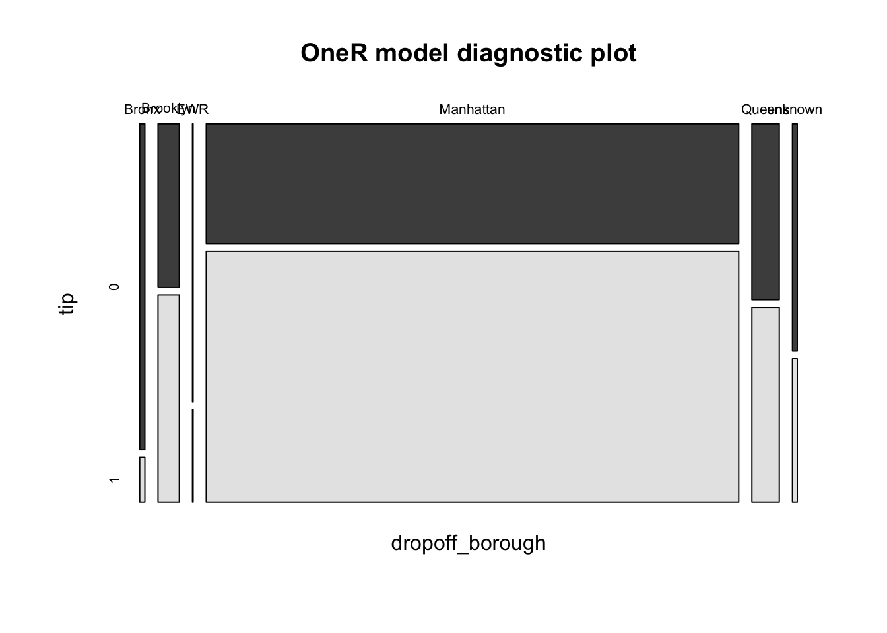

Chapter 3 [Model 1]
taxi_data <- read.csv('~/Desktop/2021_taxi_data_mod.csv')Split into test and train:
set.seed(5293)
n <- nrow(taxi_data)
train <- sample(n, .8*n)
train_dat <- taxi_data[train, ]
# test_dat <- df[-train, ]
head(train_dat)## X.1 X VendorID tpep_pickup_datetime tpep_dropoff_datetime
## 2885 2909 12405440 2 07/03/2021 07:28:51 PM 07/03/2021 07:37:38 PM
## 10 10 7142653 2 05/05/2021 11:30:48 AM 05/05/2021 11:50:01 AM
## 3208 3234 18732634 2 09/11/2021 07:30:46 PM 09/11/2021 07:46:37 PM
## 3649 3678 29380007 2 12/15/2021 07:52:46 AM 12/15/2021 08:16:21 AM
## 4464 4502 25171931 2 11/09/2021 02:29:21 PM 11/09/2021 03:03:43 PM
## 735 741 25126790 2 11/09/2021 06:40:41 AM 11/09/2021 06:48:09 AM
## passenger_count trip_distance RatecodeID store_and_fwd_flag PULocationID
## 2885 1 0.00 1 N 231
## 10 1 2.38 1 N 236
## 3208 2 1.57 1 N 231
## 3649 1 2.58 1 N 162
## 4464 1 3.64 1 N 163
## 735 1 1.85 1 N 239
## DOLocationID payment_type fare_amount extra mta_tax tip_amount
## 2885 246 1 6.5 0 0.5 1.47
## 10 164 1 13.5 0 0.5 5.04
## 3208 79 1 11.0 0 0.5 2.86
## 3649 239 1 15.5 0 0.5 2.82
## 4464 163 1 22.0 0 0.5 25.30
## 735 230 1 8.0 0 0.5 2.00
## tolls_amount improvement_surcharge total_amount congestion_surcharge
## 2885 0 0.3 11.27 2.5
## 10 0 0.3 21.84 2.5
## 3208 0 0.3 17.16 2.5
## 3649 0 0.3 21.62 2.5
## 4464 0 0.3 50.60 2.5
## 735 0 0.3 13.30 2.5
## tipped tip high_fare pickup dropoff duration
## 2885 1 1 0 2021-07-03 19:28:51 2021-07-03 19:37:38 8.783333
## 10 1 1 0 2021-05-05 11:30:48 2021-05-05 11:50:01 19.216667
## 3208 1 1 0 2021-09-11 19:30:46 2021-09-11 19:46:37 15.850000
## 3649 1 1 0 2021-12-15 07:52:46 2021-12-15 08:16:21 23.583333
## 4464 1 1 1 2021-11-09 14:29:21 2021-11-09 15:03:43 34.366667
## 735 1 1 0 2021-11-09 06:40:41 2021-11-09 06:48:09 7.466667
## season pickup_borough dropoff_borough
## 2885 summer Manhattan Manhattan
## 10 spring Manhattan Manhattan
## 3208 autumm Manhattan Manhattan
## 3649 winter Manhattan Manhattan
## 4464 autumm Manhattan Manhattan
## 735 autumm Manhattan Manhattan# my accuracy is really low when I run line 31. Line 32 doesn't work at all
library(OneR)
mod <- OneR(tip ~ pickup_borough + dropoff_borough + passenger_count + high_fare, data = train_dat)
summary(mod)##
## Call:
## OneR.formula(formula = tip ~ pickup_borough + dropoff_borough +
## passenger_count + high_fare, data = train_dat)
##
## Rules:
## If dropoff_borough = Bronx then tip = 0
## If dropoff_borough = Brooklyn then tip = 1
## If dropoff_borough = EWR then tip = 0
## If dropoff_borough = Manhattan then tip = 1
## If dropoff_borough = Queens then tip = 1
## If dropoff_borough = unknown then tip = 0
##
## Accuracy:
## 2524 of 3783 instances classified correctly (66.72%)
##
## Contingency table:
## dropoff_borough
## tip Bronx Brooklyn EWR Manhattan Queens unknown Sum
## 0 * 29 60 * 3 1099 83 * 19 1293
## 1 4 * 76 1 * 2305 * 92 12 2490
## Sum 33 136 4 3404 175 31 3783
## ---
## Maximum in each column: '*'
##
## Pearson's Chi-squared test:
## X-squared = 80.442, df = 5, p-value = 6.782e-16plot(mod)
prediction <- predict(mod, train_dat)
eval_model(prediction, train_dat)##
## Confusion matrix (absolute):
## Actual
## Prediction 0 1 Bronx Brooklyn EWR Manhattan Queens Staten Island
## 0 0 0 41 0 6 0 0 0
## 1 0 0 0 174 0 3511 202 0
## Bronx 0 0 0 0 0 0 0 0
## Brooklyn 0 0 0 0 0 0 0 0
## EWR 0 0 0 0 0 0 0 0
## Manhattan 0 0 0 0 0 0 0 0
## Queens 0 0 0 0 0 0 0 0
## Staten Island 0 0 0 0 0 0 0 0
## unknown 0 0 0 0 0 0 0 0
## UNSEEN 0 0 0 0 0 0 0 1
## Sum 0 0 41 174 6 3511 202 1
## Actual
## Prediction unknown UNSEEN Sum
## 0 31 0 78
## 1 0 0 3887
## Bronx 0 0 0
## Brooklyn 0 0 0
## EWR 0 0 0
## Manhattan 0 0 0
## Queens 0 0 0
## Staten Island 0 0 0
## unknown 0 0 0
## UNSEEN 0 0 1
## Sum 31 0 3966
##
## Confusion matrix (relative):
## Actual
## Prediction 0 1 Bronx Brooklyn EWR Manhattan Queens Staten Island
## 0 0.00 0.00 0.01 0.00 0.00 0.00 0.00 0.00
## 1 0.00 0.00 0.00 0.04 0.00 0.89 0.05 0.00
## Bronx 0.00 0.00 0.00 0.00 0.00 0.00 0.00 0.00
## Brooklyn 0.00 0.00 0.00 0.00 0.00 0.00 0.00 0.00
## EWR 0.00 0.00 0.00 0.00 0.00 0.00 0.00 0.00
## Manhattan 0.00 0.00 0.00 0.00 0.00 0.00 0.00 0.00
## Queens 0.00 0.00 0.00 0.00 0.00 0.00 0.00 0.00
## Staten Island 0.00 0.00 0.00 0.00 0.00 0.00 0.00 0.00
## unknown 0.00 0.00 0.00 0.00 0.00 0.00 0.00 0.00
## UNSEEN 0.00 0.00 0.00 0.00 0.00 0.00 0.00 0.00
## Sum 0.00 0.00 0.01 0.04 0.00 0.89 0.05 0.00
## Actual
## Prediction unknown UNSEEN Sum
## 0 0.01 0.00 0.02
## 1 0.00 0.00 0.98
## Bronx 0.00 0.00 0.00
## Brooklyn 0.00 0.00 0.00
## EWR 0.00 0.00 0.00
## Manhattan 0.00 0.00 0.00
## Queens 0.00 0.00 0.00
## Staten Island 0.00 0.00 0.00
## unknown 0.00 0.00 0.00
## UNSEEN 0.00 0.00 0.00
## Sum 0.01 0.00 1.00
##
## Accuracy:
## 0 (0/3966)
##
## Error rate:
## 1 (3966/3966)
##
## Error rate reduction (vs. base rate):
## -7.7165 (p-value = 1)mean(predict(mod, train_dat) == train_dat$tip_amount)## [1] 0.06404438# mean(predict(mod, test_dat) == test_dat$tip_amount)Based on the OneR analysis, it seems that pickup borough is the most important in determining whether or not a rider will tip over 15% on their ride. As we can see from the plot, there are 5 categories (Bronx, Brooklyn, Manhattan, Queens, and unknown borough). Riders who are picked up in Manhattan have the highest rate of tipping over 15%, and riders who are picked up from the Bronx have the lowest rate of tipping over 15%. This made sense intuitively when I looked up the median household income for the different boroughs after making this plot. Highest to lowest median income goes Manhattan, Staten Island, Queens, Brooklyn, then Bronx which is the same order for tipping >15% in this plot.
# testing
library(rpart)
library(rpart.plot)
mod1 <- rpart(tip ~ pickup_borough + dropoff_borough + season + high_fare, data = train_dat,
method="class",
control=rpart.control(cp=0))
rpart.plot(mod1, main = "tip", under=TRUE)